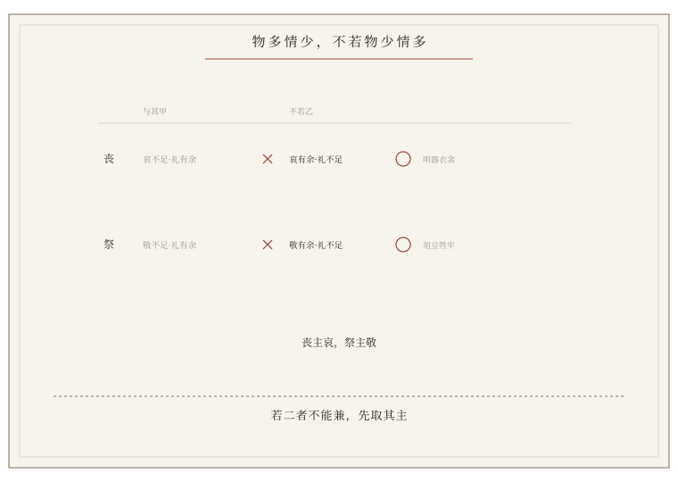

檀弓上 · 三·五十五 · 第 258 课
子路曰：「吾闻诸夫子：丧礼，与其哀不足而礼有余也，不若礼不足而哀有余也。祭礼，与其敬不足而礼有余也，不若礼不足而敬有余也。」注「丧主哀」「祭主敬」。
说什么事：丧与祭，两句话，一个式子：与其少情而多物，不如少物而多情。
落在哪一层：礼，兼及礼数与礼意。论「本胜于末」。
为何编在此位：上节论治墓之非古，此节以「本末」收之。一卷之中，论礼意者至此为一结。
【经】子路曰：「吾聞諸夫子：喪禮，與其哀不足而禮有餘也，不若禮不足而哀有餘也。祭禮，與其敬不足而禮有餘也，不若禮不足而敬有餘也。」
【注】丧主哀。祭主敬。
【疏】此一节论丧主哀、祭主敬之事。「吾闻诸夫子」者，诸，之也，据所闻事于孔子也。「丧礼，居丧之礼也；与，及也；礼有余，明器衣衾之属也」——言居丧及其哀少而礼物多也。「不若礼不足而哀有余也」者，若物多而哀少，则不如物少而哀多也。「祭礼」谓祭祀之礼，「而礼有余」谓俎豆牲牢之属多也，言敬少而牢多也。「不若礼不足而敬有余也」者，若牲器多而敬少，则不如牲器少而敬多也。
与 疏「与，及也」。比较之辞。
哀不足 哀少于礼。
礼有余 明器衣衾之属多。
不若 不如。
敬不足 敬少于礼。
礼有余（祭） 俎豆牲牢之属多。
丧主哀、祭主敬 注语。二礼之主各有所在。
子路说：「我听夫子说过：丧礼，与其哀不足而礼物有余，不如礼物不足而哀有余。祭礼，与其敬不足而礼物有余，不如礼物不足而敬有余。」
此节两句一法：「与其甲，不若乙」。甲乙皆非至善：甲是物多情少，乙是物少情多；而礼取乙。此与《论语》「礼，与其奢也，宁俭」同一语法，而所指不同：彼论奢俭，此论情物。两句一丧一祭，丧主哀、祭主敬，各以其主为准。故知礼之本不在物，在物所载者。
第一层 丧主哀 丧之为礼，其主在哀。明器衣衾所以将哀，非所以代哀。哀不足而物有余，则物浮于外，人不见其哀，只见其办。
第二层 祭主敬 祭之为礼，其主在敬。俎豆牲牢所以将敬，非所以代敬。敬不足而物有余，则丰盛为虚设。
第三层 两「不若」的分寸 注意礼不曰「礼可废」，只说「不若」。此与「宁无衰」不同：彼是形制不正则宁无，此是物多情少则不若物少情多。皆是择一于二者之间，非废其一。
第四层 子路之传 「吾闻诸夫子」四字，见子路非自造。疏「诸，之也」，是「之」之合音。此见古人之重所出：一句之传，必记其来处。
与今日何干 办事与办心。婚丧嫁娶、典礼仪式，最容易的是把物堆足，最难的是把心放进去。此节给的尺是：若二者不能兼，取心；而礼并不因此废——只是先取其主。
| 左 | 右 |
|---|---|
| 哀不足而礼有余 | 物浮于外 |
| 礼不足而哀有余 | 取其主 |
| 敬不足而礼有余 | 丰盛为虚设 |
| 礼不足而敬有余 | 取其主 |
| 丧主哀 | 丧之本 |
| 祭主敬 | 祭之本 |
画一处堂上的丧祭之所，视点平。左右各设一案：左案上堆满明器、衣衾、俎豆，层层叠叠，案后无人；右案上只有一只素碗与一双箸，案后坐着一位孝子（衣素、低头、肩微颤）。两案之间空着一片地。不写文字、不画人面细节。赭色只用在右案素碗的圈足与孝子衣袖的一角。
